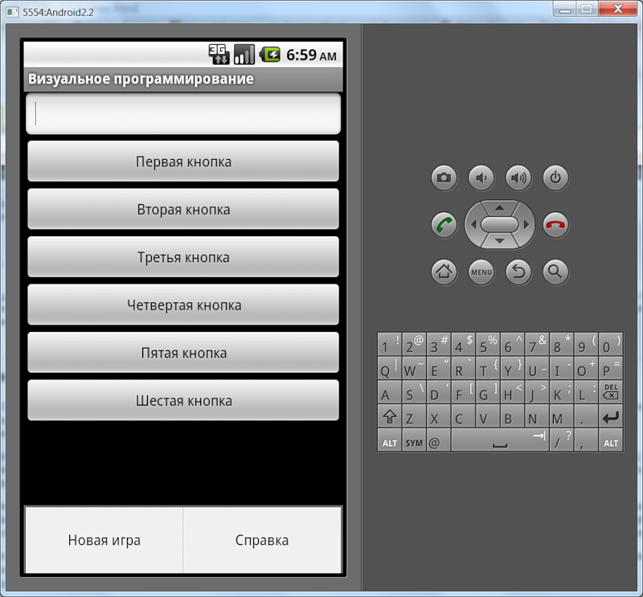
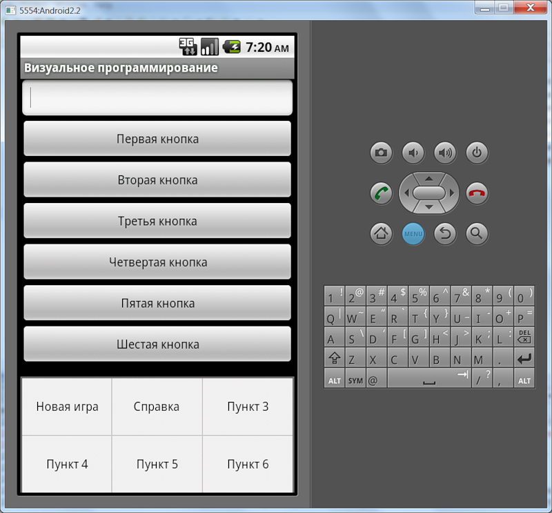
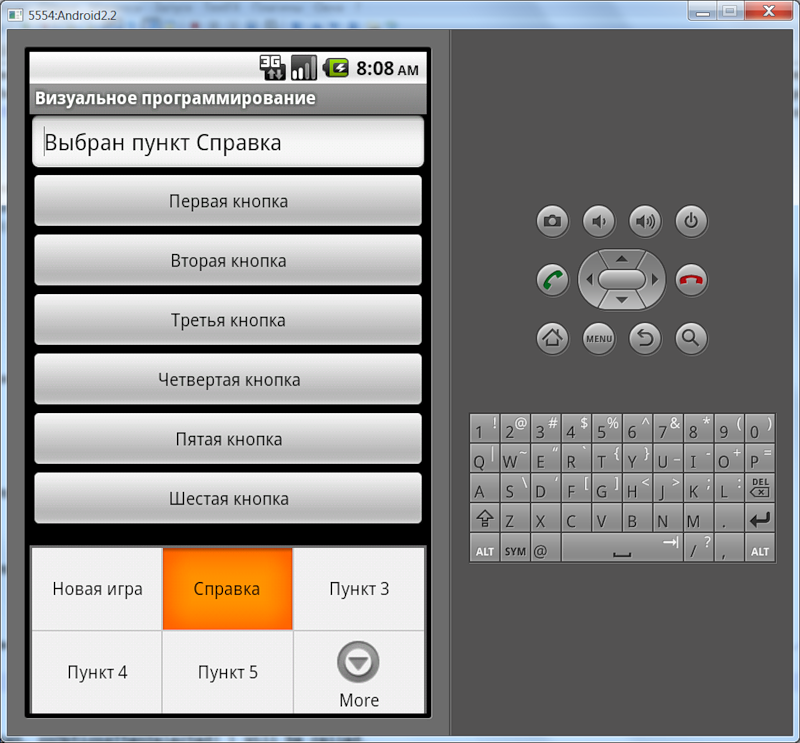

/* Моя кошка замечательно разбирается в программировании. Стоит мне объяснить проблему ей - и все становится ясно. */
John Robbins, Debugging Applications, Microsoft Press, 2000

/* Моя кошка замечательно разбирается в программировании. Стоит мне объяснить проблему ей - и все становится ясно. */
John Robbins, Debugging Applications, Microsoft Press, 2000
Создание меню при помощи ресурсов
Выбор пунктов меню
Программное создание меню
Программное открытие или закрытие меню
Программное удаление пункта меню
Определить наличие кнопки Menu
Разметка для меню
Вы уже работали с меню в одном из первых уроков первого месяца обучения. Рассмотрим работу с меню глубже. Будут рассмотрены как старые устройства под Android 2.3, так и новые телефоны на Android 4.0.
За меню отвечает класс android.view.Menu. Каждая активность связана с одним объектом меню. Само меню содержит пункты меню (класс android.view.MenuItem) и подменю (класс android.view.SubMenu).
При нажатии кнопки Menu на старых телефонах появляется набор пунктов меню, прикрепляемый к активности. Меню может содержать значки. Такое меню может содержать шесть пунктов (как правило). При наличии более шести пунктов используется расширенное меню - в этом случае вместо шестого пункта появляется пункт Опции (More). При нажатии данного пункта показывается расширенное меню со списком пунктов, которые не поместились в основной части меню выбора опций.
Когда меню открывается впервые, Android вызывает метод onCreateOptionsMenu(), передавая в качестве параметра объект Menu. Меню можно создавать в виде ресурсов в XML-файле или использовать метод add().
В стандартном проекте при выборе обычного шаблона уже есть заготовка для меню из одного пункта Settings и вызов метода для меню (вы об этом уже знаете).
Рассмотрим работу с меню через ресурсы. Для создания меню используются ресурсы, которые должны храниться в XML-файле. Сам файл должен находиться в папке res/menu/ вашего проекта. Меню состоит из следующих элементов:
Предположим, мы решили использовать меню для какой-нибудь игры. Создадим новый файл game_menu.xml:
<?xml version="1.0" encoding="utf-8"?>
<menu xmlns:android="http://schemas.android.com/apk/res/android">
<item android:id="@+id/new_game"
android:title="@string/new_game" />
<item android:id="@+id/help"
android:title="@string/help" />
</menu>
Мы создали меню с двумя пунктами. Каждый пункт включает в себя следующие атрибуты:
Существуют и другие атрибуты для элемента item, например android:icon="@drawable/home" позволит также вывести значок для пункта меню, а android:enabled="false" позволяет сделать пункт меню недоступным.
Атрибут android:titleCondensed применяется в том случае, если обычный заголовок слишком широкий и не «помещается» в выбранном элементе меню.
Атрибут android:orderInCategory определяет порядок, в котором отображаются элементы меню MenuItems.
Кстати, вы можете использовать встроенные системные значки Android. Например, android:icon="@android:drawable/ic_menu_help" позволит вам вывести значок помощи, который зашит в систему. Подробнее о системных значках почитайте в статье Системные графические ресурсы
При создании меню мы указали на строковые ресурсы @string/new_game и @string/help. Необходимо добавить новые строки в файле strings.xml:
<string name="new_game">Новая игра</string>
<string name="help">Справка</string>
Теперь нужно внести изменения в классе активности, в котором будет выводиться меню. Программа должна сконвертировать созданный нами ресурс меню в программный объект. Для этой цели существует специальный метод MenuInflater.inflate(), который вызывается в специальном методе обратного вызова onCreateOptionsMenu(). Данный метод и предназначен для вывода меню при нажатии кнопки MENU на устройстве:
@Override
public boolean onCreateOptionsMenu(Menu menu)
{
MenuInflater inflater = getMenuInflater();
inflater.inflate(R.menu.game_menu, menu);
return true;
}
После вставки кода среда разработки попросит импортировать недостающие пространства имен.
import android.view.Menu;
import android.view.MenuInflater;
Метод onCreateOptionsMenu() метод инициирует первое появление меню на экране и принимает в качестве параметра объект Menu (для старых устройств). Вы можете сохранить ссылку на меню и использовать ее в любом месте кода, пока метод onCreateOptionsMenu() опять не будет вызван. Вам необходимо всегда использовать реализацию этого обработчика из родительского класса, потому как она при необходимости автоматически включает в меню дополнительные системные пункты. В новых устройствах метод вызывается при создании активности. Метод должен возвращать значение true, чтобы меню было видимым на экране.
Запустив программу, нажмите кнопку MENU на эмуляторе, чтобы увидеть созданное меню.

Метод getMenuInflater() возвращает экземпляр класса MenuInflater, который мы используем для чтения данных меню из XML.
Как видите, меню появляется в нижней части экрана. Всего можно одновременно вывести на экран шесть пунктов меню. Если пунктов больше, то будет выведено пять пунктов плюс шестой пункт More, который позволит увидеть остальные пункты. Давайте проверим и добавим новые пункты меню.
Сначала добавим шесть пунктов.

Добавим еще один пункт к меню, чтобы их стало семь.

Мы научились создавать меню. Но пока оно бесполезно, так как пункты меню никак не реагируют на наши нажатия. Для обработки нажатий пунктов меню служит метод onOptionsItemSelected(). Метод распознает пункт, выбранный пользователем, через MenuItem. Мы можем теперь определить выбранный пункт через вызов getItemId(), который возвращает идентификатор пункта меню. Далее через оператор switch нам остается определить нужные команды:
@Override
public boolean onOptionsItemSelected(MenuItem item)
{
// Операции для выбранного пункта меню
switch (item.getItemId())
{
case R.id.new_game:
newGame();
return true;
case R.id.help:
showHelp();
return true;
default:
return super.onOptionsItemSelected(item);
}
}
public void newGame()
{
edtext.setText("Выбран пункт Новая игра");
}
public void showHelp()
{
edtext.setText("Выбран пункт Справка");
}
Запустите приложение, вызовите меню и выберите первый или второй пункт меню. В текстовом поле должно появиться сообщение.

В приведенном примере getItemId() запрашивает ID для выбранного пункта меню и начинает сравнивать через оператор выбора switch с идентификаторами, которые мы задали в XML-ресурсах. При обнаружении нужного идентификатора выполняется обработчик для заданного пункта меню. Если программа ничего не обнаружит, то выполняется оператор default, который возвращает super class.
В Android 3.0 можно добавить атрибут android:onClick в ресурсах меню, и вам уже не нужно использовать onOptionsItemSelected(). При помощи android:onClick вы можете указать нужный метод при выборе пункта меню.
// у атрибута пункта меню установлено значение android:onClick="onMenuClick"
public void onMenuClick(MenuItem item){
edtext.setText("Выбран пункт Накормить кота");
}
Расссмотрим программное создание меню для полноты картины. Нам понадобится определить несколько констант для пунктов меню:
// идентификаторы для пунктов меню
private static final int IDM_OPEN = 101;
private static final int IDM_SAVE = 102;
public boolean onCreateOptionsMenu(Menu menu)
{
// добавляем пункты меню
menu.add(Menu.NONE, IDM_OPEN, Menu.NONE, "Открыть");
menu.add(Menu.NONE, IDM_SAVE, Menu.NONE, "Сохранить");
}
У метода add() есть четыре параметра:
Метод возвращает объект MenuItem, который можно использовать для установки дополнительных свойств, например, для установить значок, горячую клавишу и т.д.
Если вы хотите создать меню со значками, то воспользуйтесь методом setIcon() при создании меню.
menu.add(Menu.NONE), IDM_OPEN, Menu.NONE, "Открыть")
.setIcon(R.drawable.icon_menu_open);
Напомним еще раз, что значки можно добавить только к шести пунктам меню (или к пяти, если пунктов больше шести).
Метод onCreateOptionsMenu вызывается системой только один раз при создании меню. Если вам требуется обновить меню во время работы программы, то используйте метод обратного вызова onPrepareOptionsMenu().
При выборе пункта меню вызывается метод onOptionsItemSelected, который передает объект MenuItem - пункт меню, выбранный пользователем. При помощи метода getItemId можно получить идентификатор выбранного пункта меню. После идентфикации пункта меню можно написать код для обработки события выбора меню:
public boolean onOptionsItemSelected(MenuItem item)
{
switсh (item.getItemId())
case IDM_OPEN:
return true;
case IDM_SAVE:
return true;
return false;
}
Также можно задавать горячие клавиши для быстрого доступа, используя символы клавиатуры, при помощи нескольких методов:
Например, если задать горячую клавишу setAlphabeticShortcut('q');, то при открытии меню (или при удерживании клавиши MENU) нажатие клавиши Q выберет данный пункт меню. Эта горячая клавиша (или сочетание клавиш) будет показана как подсказка, отображающая ниже имени пункта меню.
Подменю можно добавить в любое меню, кроме другого подменю. Подменю создается в методе обратного вызова onCreateOptionsMenu() с помощью метода addSubMenu(), который возвращает объект SubMenu. В объект SubMenu можно добавить дополнительные пункты к этому меню, используя метод add(). Например:
public static final int IDM_HELP = 101;
public static final int IDM_NEW = 201;
public static final int IDM_OPEN = 202;
public static final int IDM_SAVE = 203;
public static final int IDM_CUT = 301;
public static final int IDM_COPY = 302;
public static final int IDM_PASTE = 303;
@Override
public boolean onCreateOptionsMenu(Menu menu)
{
SubMenu subMenuFile = menu.addSubMenu("Файл");
subMenuFile.add(Menu.NONE, IDM_NEW, Menu.NONE, "Новый");
subMenuFile.add(Menu.NONE, IDM_OPEN, Menu.NONE, "Открыть");
subMenuFile.add(Menu.NONE, IDM_SAVE, Menu.NONE, "Сохранить");
SubMenu subMenuEdit = menu.addSubMenu("Правка");
subMenuEdit.add(Menu.NONE, IDM_CUT, Menu.NONE, "Вырезать");
subMenuEdit.add(Menu.NONE, IDM_COPY, Menu.NONE, "Копировать");
subMenuEdit.add(Menu.NONE, IDM_PASTE, Menu.NONE, "Вставить");
menu.add(Menu.NONE, IDM_HELP, Menu.NONE, "Справка");
return super.onCreateOptionsMenu(menu);
}
@Override
public boolean onOptionsItemSelected(MenuItem item)
{
CharSequence message;
switch (item.getItemId()) {
case IDM_NEW:
message = "Выбран пункт Новый";
break;
case IDM_OPEN:
message = "Выбран пункт Открыть";
break;
case IDM_SAVE:
message = "Выбран пункт Сохранить";
break;
case IDM_CUT:
message = "Выбран пункт Вырезать";
break;
case IDM_COPY:
message = "Выбран пункт Копировать";
break;
case IDM_PASTE:
message = "Выбран пункт Вставить";
break;
case IDM_HELP:
message = "Выбран пункт Справка";
break;
default:
return false;
}
// выводим уведомление о выбранном пункте меню
Toast toast = Toast.makeText(this, message, Toast.LENGTH_LONG);
toast.setGravity(Gravity.CENTER, 0, 0);
toast.show();
return true;
}
Теперь при выборе пункта меню появится еще одно окно с подменю. Попробуйте сами.
В пункты меню возможно добавление флажков или переключателей. Чтобы добавить флажок или переключатель для отдельного элемента меню, необходимо использовать метод setCheckable():
MenuItem item = menu.add(0, IDM_FORMAT_BOLD, 0, "Bold");
item.setCheckable(true);
Если есть необходимость добавить несколько пунктов меню с флажками или переключателями, то можно объединить их в группы меню, создав отдельный идентификатор. Пункт меню добавляется в группу через метод add(), передав ему в качестве первого параметра идентификатор группы меню. Допустим, мы объявили идентификаторы для группы меню Цвет и элементов меню для установки цвета:
public static final int IDM_COLOR_GROUP = 400;
public static final int IDM_COLOR_RED = 401;
public static final int IDM_COLOR_GREEN = 402;
public static final int IDM_COLOR_BLUE = 403;
Теперь для создания группы меню с флажками нужно назначить идентификатор группы на каждый пункт меню и вызвать метод setGroupCheckable() для всей группы (этом случае нет необходимости вызывать метод setCheckable() для каждого пункта меню):
SubMenu subMenuColor = menu.addSubMenu("Цвет");
subMenuColor.add(IDM_COLOR_GROUP, IDM_COLOR_RED, Menu.NONE, "Красный");
subMenuColor.add(IDM_COLOR_GROUP, IDM_COLOR_GREEN, Menu.NONE,"Зеленый");
subMenuColor.add(IDM_COLOR_GROUP, IDM_COLOR_BLUE, Menu.NONE, "Синий");
subMenuColor.setGroupCheckable(IDM_COLOR_GROUP, true, false);
У метода setGroupCheckable() три параметра:
Для управления состоянием флажков и переключателей в обработчике события выбора пункта меню нужно написать следующее:
@Override
public boolean onOptionsItemSelected(MenuItem item)
{
CharSequence message;
switch (item.getItemId()) {
...
case IDM_COLOR_RED:
// инвертируем состояние флажка
item.setChecked(!item.isChecked());
message = "Красный цвет";
break;
default:
return false;
}
Запустите проект, вызовите меню и выберите пункт меню Цвет. У вас появится подменю с тремя пунктами (Красный, Зеленый, Синий) в виде флажков. Состояние флажков и переключателей обрабатывается в коде программы и сохраняется при повторных вызовах меню.
Можно сразу назначить намерение выбранному пункту меню через метод setIntent(), которое сработает при нажатии этого пункта, если данное событие не было перехвачено обработчиками onMenuItemClickListener (устар.) или onOptionsItemSelected. Сработав, намерение передается в метод startActivity.
menuItem.setIntent(new Intent(this, MyOtherActivity.class));
Если вам по каким-то причинам нужно программно открыть меню (например, в демонстрационных целях), то используйте метод openOptionsMenu():
openOptionsMenu();
Для программного закрытия меню используйте метод closeOptionsMenu(), впрочем у меня повторный вызов метода openOptionsMenu() также закрывает меню.
Допустим, мы определили пункт меню в xml-файле:
<item
android:id="@+id/action_dog"
android:orderInCategory="100"
android:showAsAction="never"
android:title="Пёсик"/>
Чтобы удалить явно лишний пункт меню из нашей программы о котах, нужно получить доступ к пункту меню через метод findItem() и сделать его невидимым. Ссылку на объект Menu нужно передать в метод onCreateOptionsMenu, чтобы программа узнала об изменении состава меню.
// переменная класса
Menu menu;
@Override
public boolean onCreateOptionsMenu(Menu menu) {
super.onCreateOptionsMenu(menu);
// передаём ссылку на наш объект
this.menu = menu;
getMenuInflater().inflate(R.menu.test, menu);
return true;
}
// щелчок кнопки
public void onClick(View v) {
if (menu != null) {
// находим нужный элемент
MenuItem item_dog = menu.findItem(R.id.action_dog);
// делаем его невидимым
item_dog.setVisible(false);
}
}
Но у данного решения есть недостаток, если мы повернём экран, то активность пересоздатся и удалённое меню снова появится. Как же нам избавиться от сранного пёсика?
Надо запомнить состояние пункта меню и сохранить его в объекте типа Bundle в методе onSaveInstanceState, а в методе onCreate() извлечь сохранённое состояние и передать методу onPrepareOptionsMenu, который вызывается перед показом меню на экране:
package ru.alexanderklimov.test;
import android.app.Activity;
import android.os.Bundle;
import android.view.Menu;
import android.view.MenuItem;
import android.view.View;
public class TestActivity extends Activity {
Menu menu;
Boolean savedMenuDogIsVisible;
final static String KEY_MENU_DOG = "KEY_MENU_DOG";
/** Called when the activity is first created. */
@Override
public void onCreate(Bundle savedInstanceState) {
super.onCreate(savedInstanceState);
setContentView(R.layout.activity_test);
// извлекаем данные о видимости пункта меню
if (savedInstanceState != null) {
savedMenuDogIsVisible = savedInstanceState.getBoolean(KEY_MENU_DOG,
true);
}
}
@Override
public boolean onCreateOptionsMenu(Menu menu) {
super.onCreateOptionsMenu(menu);
this.menu = menu;
getMenuInflater().inflate(R.menu.test, menu);
return true;
}
public void onClick(View v) {
if (menu != null) {
MenuItem item_dog = menu.findItem(R.id.action_dog);
// прячем пункт меню
item_dog.setVisible(false);
}
}
@Override
protected void onSaveInstanceState(Bundle outState) {
// TODO Auto-generated method stub
super.onSaveInstanceState(outState);
if (menu != null) {
MenuItem item_dog = menu.findItem(R.id.action_dog);
// сохраняем текущее состояние пункта меню - true или false
outState.putBoolean(KEY_MENU_DOG, item_dog.isVisible());
}
}
@Override
public boolean onPrepareOptionsMenu(Menu menu) {
if (savedMenuDogIsVisible != null) {
MenuItem item_dog = menu.findItem(R.id.action_dog);
// перед выводом на экран узнаём нужное состоятние пункта меню
item_dog.setVisible(savedMenuDogIsVisible);
}
return super.onPrepareOptionsMenu(menu);
}
}
На старых устройствах использовалась реальная кнопка Menu. В новых версиях Android меню убрали в ActionBar и её наличие в виде отдельной кнопки стало необязательным. Но многие производители по-прежнему выпускают телефоны с кнопкой для меню. Чтобы определить, есть ли такая кнопка, в Android 14 добавили новый метод, который позволит определить наличие этой кнопки.
if (Build.VERSION.SDK_INT <= 10
|| (Build.VERSION.SDK_INT >= 14 && ViewConfiguration.get(this)
.hasPermanentMenuKey())) {
// menu key is present
Toast.makeText(this, "Кнопка Menu есть", Toast.LENGTH_LONG).show();
} else {
// No menu key
Toast.makeText(this, "Кнопки Menu нет", Toast.LENGTH_LONG).show();
}
В современных устройствах меню является частью ActionBar. И вы можете настроить разметку меню через XML.
Допустим, вы выбрали такой вариант:
<item
android:id="@+id/action_new"
android:actionLayout="@layout/action_layout"
android:orderInCategory="100"
android:showAsAction="always|withText"
android:title="Новый"/>
В атрибуте showAsAction не используйте значение never, иначе разметку не увидите. Сама разметка задана через атрибут actionLayout. Код для разметки:
<?xml version="1.0" encoding="utf-8"?>
<LinearLayout xmlns:android="http://schemas.android.com/apk/res/android"
xmlns:tools="http://schemas.android.com/tools"
android:layout_width="match_parent"
android:layout_height="match_parent"
android:orientation="horizontal" >
<ImageButton
android:layout_width="wrap_content"
android:layout_height="match_parent"
android:contentDescription="Custom button!"
android:scaleType="fitCenter"
android:src="@drawable/blue" />
</LinearLayout>